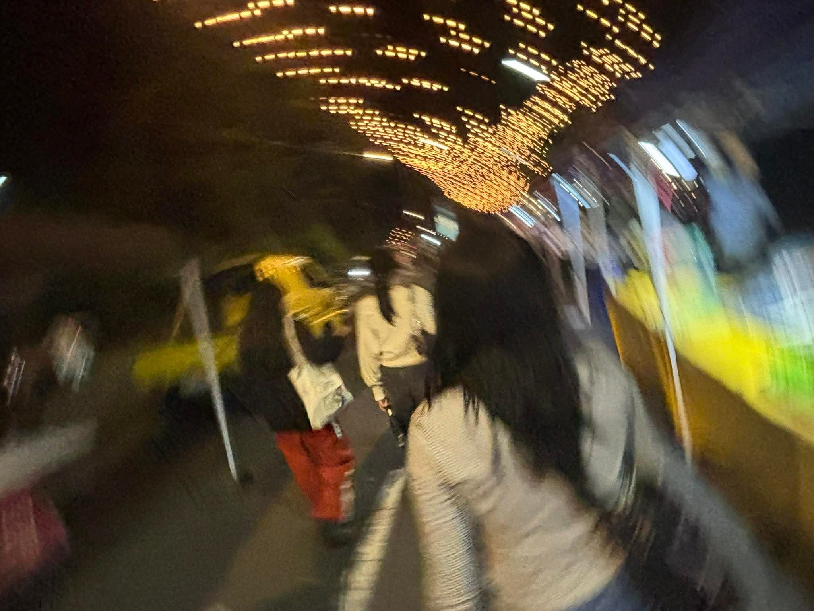
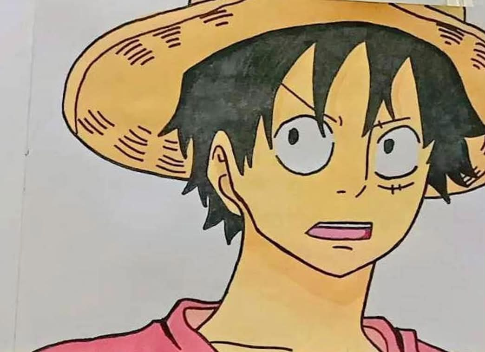
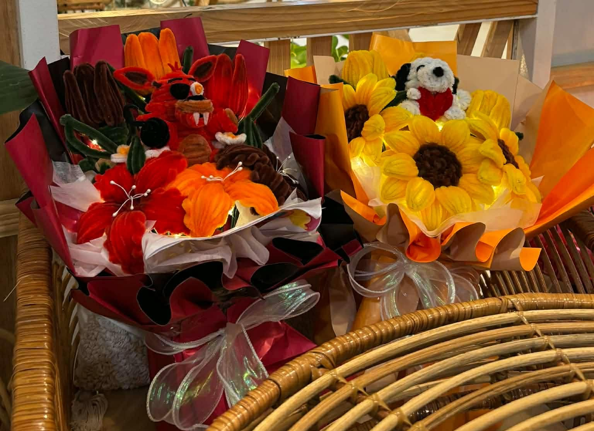
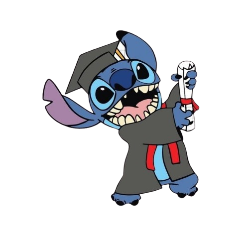
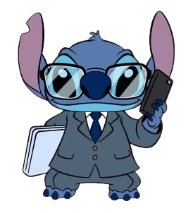

Hello!
I'm Ash! I'm a first-year Computer Science student who loves turning big, messy ideas into code that actually works.
Here are some facts about me.
About Me
My Path into Computing
-
Where it started
My constant exposure to implementing ideas to functioning devices through out junior high school up until senior high, sparked my interest in computer related courses.
-
Choosing BSCS
Eventually, I chose Computer Science because it combines creative problem-solving with mathematical logic and computing fundamentals, leading me to enroll at Bicol University.
-
Where I'm headed
I'm building my foundation in programming, algorithms, networks, and operating systems, with cybersecurity as my long-term goal.
My Hobbies






My Top 3 Goals

- Graduate

- Land a Job
- Live a Fulfilling Life
My Favorites
Reflection
What was easy?
Since this is my first time creating a webpage and using HTML and CSS, the easiest part for me would be conceptualizing how I want my webpage to look. With HTML, we were given resources and tutorials, so it was easy for me to create basic structures like the headers, paragraphs, and reflection cards. While in CSS, I had fun navigating how each element looks on my webpage. It was easy for me to format my texts if I wanted them italicized and to position them according to my preferences.
What was confusing?
At first, I was confused about what functions are needed to be used. For example, with my paragraph, there is a break per part so that it wouldn’t be too long. I was confused at first about whether I should use "<br>" or "<span>", but with the tutorials that I watched online and with the resources given to us, I was able to understand it. With CSS, adding images and then using the flexbox tool in arranging them was the most confusing part for me. I struggled a lot in getting the format that I have imagined in my head.
What is one thing you would improve?
I have conceptualized my webpage, and I know what I wanted for its design, but given that I am still learning with HTML and CSS, I’m not quite satisfied with my work. I would improve the format of images and texts and add more of the stitch sticker texts for each section. I would also like to learn how to add more depth and dimension to my webpage, as it currently looks flat. As well as learn how to add animations to enhance my website more.